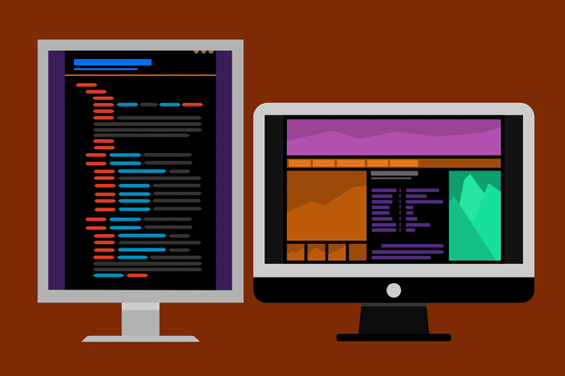

HTML (acrònim d’Hyper Text Markup Language, en català, "llenguatge de marcat d'hipertext"), és un llenguatge de marcat que deriva de l'SGML dissenyat per estructurar textos i relacionar-los en forma d'hipertext. Gràcies a Internet i als navegadors web, s'ha convertit en un dels formats més populars que existeixen per a la construcció de documents per a la web.
El llenguatge HTML pot ser creat i editat amb qualsevol editor de text bàsic, com pot ser Gedit en GNU/Linux, el Bloc de notes de Windows, o qualsevol altre editor que admeti text sense format com GNU Emacs, Microsoft Wordpad, TextPad, Vim, Notepad ++, entre d'altres.
Existeixen, a més, altres editors per a la realització de llocs web amb característiques WYSIWYG (What You See Is What You Get, o en català: «el que veus és el que obtens»). Aquests editors permeten veure el resultat del que s'està editant en temps real, a mesura que es va desenvolupant el document. Ara bé, això no significa una forma diferent de fer llocs web, sinó que és una forma una mica més simple, ja que aquests programes, a més de tenir l'opció de treballar amb vista preliminar, tenen la seva pròpia secció HTML, la qual va generant tot el codi a mesura que es treballa. Alguns exemples d'editors WYSIWYG són KompoZer, Microsoft FrontPage o Adobe Dreamweaver.
Combinar aquests dos mètodes resulta molt interessant, ja que es complementen entre si. Per exemple, si s'edita tot en HTML i el desenvolupador oblida algun codi o etiqueta, només cal dirigir-se a l'editor visual o WYSIWYG i es continua aquí l'edició o viceversa, ja que hi ha casos en què resulta més ràpid i fàcil escriure directament el codi d'alguna característica que l'usuari vol afegir al lloc que buscar l'opció en el programa mateix.
Hi ha un altre tipus d'editors HTML anomenats WYSIWYM que donen més importància al contingut i al significat que a l'aparença visual. Entre els objectius que tenen aquests editors és la separació del contingut i la presentació, fonamental en el disseny web.
HTML utilitza etiquetes o marques, que consisteixen en breus instruccions de començament i final, mitjançant les quals es determina la forma en què ha d'aparèixer al seu navegador el text, així com les imatges i els altres elements.
Tota etiqueta HTML està tancada entre els signes menor que i major que (<>), i algunes tenen atributs que poden prendre algun valor. En general les etiquetes s'aplicaran de dues formes especials:
Les etiquetes bàsiques o mínimes que conformen un document HTML són:
1 <! DOCTYPE HTML>
2 <html>
3 <head>
4 <meta charset = "utf-8" />
5 <title> Exemple 1 </title>
6 </head>
7 <Body>
8 <p> Paràgraf d'exemple </p>
9 </body>
10 </html>